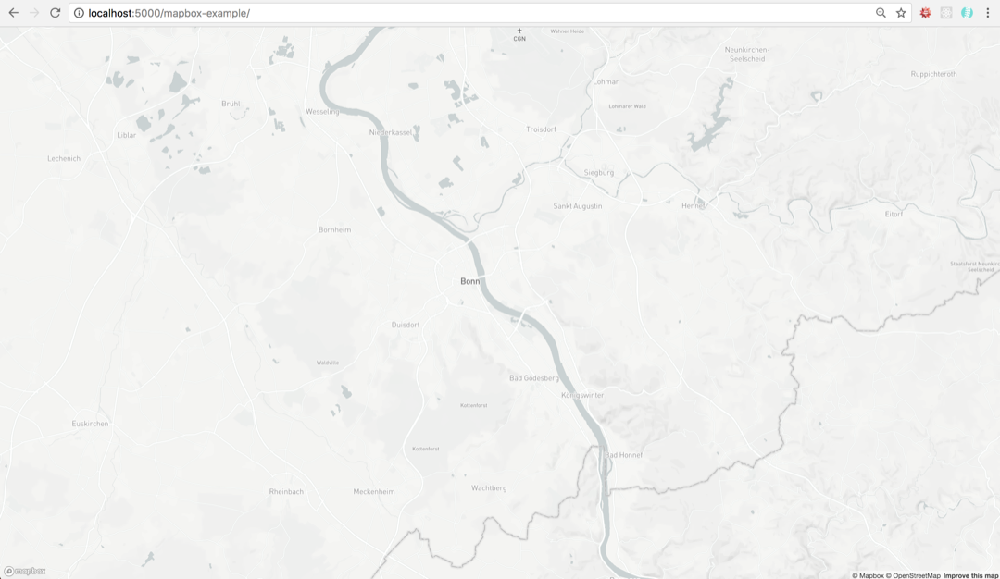
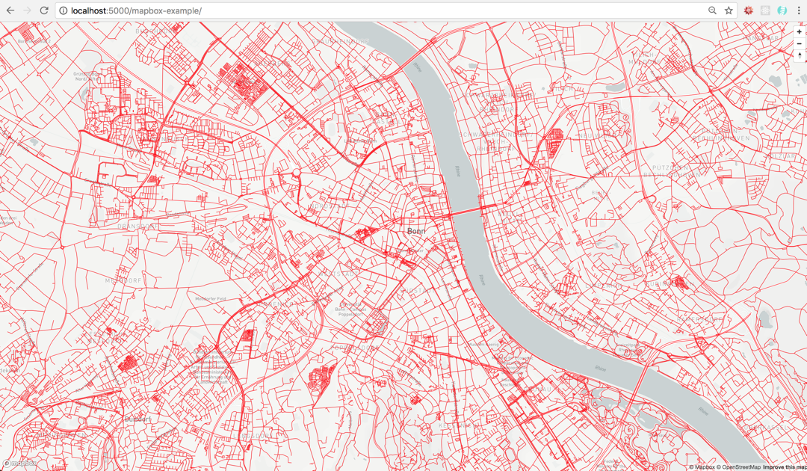

Load Tegola-served content on a Mapbox GL Map!
Tegola is a vector tile server written in Go. Tegola takes geospatial data from a PostGIS Database and slices it into vector tiles that can be efficiently delivered to any client.
Mapbox GL JS is a client library for rendering MVT and raster maps. Combined with Tegola, beautiful maps may be rendered with complete control.
This guide will take you through the steps to get Tegola rendering a map using Mapbox GL JS and visualized in a web browser.
The first thing you’ll need is a Tegola endpoint. You can either set one up locally by following the instructions located in the getting started guide or you can use an existing endpoint.
The second thing you’ll need is a Mapbox GL access token. You should have a look at their docs if you need more assistance in obtaining a new token.
Next, we make an HTML page that will show the map. The following is a minimal example HTML page for rendering a map with Mapbox GL JS. Copy and paste the following code into an empty file and name it index.html.
<!doctype html>
<html lang="en">
<head>
<style>
body {
margin: 0;
padding: 0;
}
#map {
position: absolute;
top: 0;
bottom: 0;
width: 100%;
}
</style>
<script src='https://api.tiles.mapbox.com/mapbox-gl-js/v0.42.2/mapbox-gl.js'></script>
<link href='https://api.tiles.mapbox.com/mapbox-gl-js/v0.42.2/mapbox-gl.css' rel='stylesheet' />
<title>Mapbox example</title>
</head>
<body>
<div id="map"></div>
<script type="text/javascript">
// TODO: Enter your mapbox gl access token on the line below
mapboxgl.accessToken = ''
var map = new mapboxgl.Map({
container: 'map',
style: 'mapbox://styles/mapbox/light-v9',
center: [7.0982, 50.7374],
zoom: 11
});
</script>
</body>
</html>
We are including the Mapbox GL JS library from https://api.tiles.mapbox.com/mapbox-gl-js/v0.42.2/mapbox-gl.js and the matching css file in the head of the document. In the body, we define <div id="map"></div> which is the container that will hold the rendered map.
To render the map we will use a javascript snippet.
mapboxgl.accessToken = ''
var map = new mapboxgl.Map({
container: 'map',
style: 'mapbox://styles/mapbox/light-v9',
center: [7.0982, 50.7374],
zoom: 11
});
Important details to note in this snippet are the container:'map' piece which tells Mapbox to instantiate the map into the div with an id of map. The style property which is the path to the style json file. Inside the style file is a source property which defines the map data that will be imported. In this case we are using a Tegola endpoint which serves up OpenStreetMap (OSM) data.
Open the HTML file in a browser and you should see the following:

A map of Bonn, Germany is rendered with the stylesheet we defined.
For more information on Mapbox GL JS check out the official documentation: Mapbox GL JS.
Now that we have the basemap and the server, we will finish this tutorial by adding the two. The following assumes that you’ve used the first tutorial for Tegola using Bonn.
Lets have a look at your toml file first:
[[maps]]
name = "bonn"
[[maps.layers]]
provider_layer = "bonn.road"
min_zoom = 10
max_zoom = 20
[[maps.layers]]
provider_layer = "bonn.main_roads"
min_zoom = 5
max_zoom = 20
[[maps.layers]]
provider_layer = "bonn.lakes"
min_zoom = 5
max_zoom = 20
The name of this source is bonn. This will be part of the API call you make to retrieve the layers. Next, you have the names of the layers. In this source, you see road, lakes, main_roads. Each layer shows the content of the source, which can style from within the browser when we call the indivdual layers. Lets add the roads:
First, we need to choose the trigger when the map content gets loaded. We will use the 'load' trigger (You can read more about the triggers available here):
map.on('load', function () { ... });
Now, we add the source:
map.on('load', function () {
map.addSource('bonn', {
'type': 'vector',
"tiles": ["http://localhost:8080/maps/bonn/{z}/{x}/{y}.vector.pbf?"],
"tolerance": 0
});
}
You’ll notice here that we’re selecting content from the bonn map which we configured in the .toml file earlier. Now, we add a layer:
map.addLayer({
"id": "road",
"source": "bonn",
"source-layer": "road",
"type": "line",
"paint": {
"line-color": "#000000",
"line-width": 1
}
});
This gives provides the browser with the instruction on how we want to style the layer. Together, it all looks like the following:
<!DOCTYPE html>
<html>
<head>
<meta charset='utf-8' />
<title></title>
<meta name='viewport' content='initial-scale=1,maximum-scale=1,user-scalable=no' />
<script src='https://api.tiles.mapbox.com/mapbox-gl-js/v0.38.0/mapbox-gl.js'></script>
<link href='https://api.tiles.mapbox.com/mapbox-gl-js/v0.38.0/mapbox-gl.css' rel='stylesheet' />
<style>
body {
margin: 0;
padding: 0;
}
#map {
position: absolute;
top: 0;
bottom: 0;
width: 100%;
}
</style>
</head>
<body>
<div id='map'></div>
<script>
// TODO: Add your mapbox token right below!
mapboxgl.accessToken = '';
var map = new mapboxgl.Map({
container: 'map',
style: 'mapbox://styles/mapbox/light-v9',
center: [7.0982, 50.7374],
zoom: 11
});
var nav = new mapboxgl.NavigationControl();
map.addControl(nav, 'top-right');
map.on('load', function () {
map.addSource('bonn', {
'type': 'vector',
"tiles": ["http://localhost:8080/maps/bonn/{z}/{x}/{y}.vector.pbf?"],
"tolerance": 0
});
map.addLayer({
"id": "road",
"source": "bonn",
"source-layer": "road",
"type": "line",
"paint": {
"line-color": "#FF0000",
"line-width": 1
}
});
});
</script>
</body>
From here, you should see the road layers populate in red on top of the basemap:

From here, you can load other layers from the same source. Keep in mind that you aren’t limited to lines, fills (polygon fills) and points. Be sure to consult the Mapbox GL API Spec to learn more about other ways you can symbolize layers using Mapbox GL!